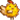

Modding:Spieleranleitung/Problembehebung
Funktioniert mit deinen Mod irgendwas nicht? Dann ist diese Seite für dich!
Häufige Lösungen
Die Grundlagen
- Probiere deinen Computer neu zu starten.
- Stelle sicher du hast die neuste Version von SMAPI.
Deine SMAPI Version wird oben am Fenster angezeigt. - Stelle sicher dass du Stardew Valley 1.6 oder später hast.
Klicke den "?" Knopf auf dem Titelbildschirm, damit die Verionsnummer links unten erscheint.
Setze deine Dateien zurück
Viele Probleme entstehen durch kaputte Spieldateien, vor allem wenn du XNB Mods verwendest). Du kannst deine Spieldateien zurücksetzen, um dies zu beheben. XNB Mods werden dabei entfernt, aber alle SMAPI Mods bleiben erhalten
- Siehe Anleitungen für Steam oder GOG Galaxy.
- Wenn du SMAPI auf Linux oder Mac verwendest, installiere SMAPI danach neu um den Launcher zu beheben.
| Klappe aus für mehr Optionen |
|---|
Wenn du nicht alle Dateien zurücksetzen willst, sind hier ein paar andere Möglichkeiten.
|
Lösungen für häufige Fehlermeldungen
"SMAPI can't find the game"
"SMAPI kann das Spiel nicht finden"
- Stelle sicher dass du
 StardewModdingAPI.exein deinem Spielordner startest (siehe Installationsanleitung). - Wenn du SMAPI manuell (ohne den Installer zu verwenden) installiert? Stelle sicher, dass du die richtigen Dateien kopiert hast: internal/Windows auf Windows und internal/Mono auf Linux oder Mac.
"Skipped '...' because it doesn't have a manifest.json"
"Hat '...' übersprungen weil es kein manifest.json hat"
SMAPI hat keine manifest.json Datei für den Mod im genannten Ordner gefunden. Das heißt meistens es handelt sich nicht um einen SMAPI Mod, wird also nicht im Mods Ordner funktionieren. Schau dir noch mal die Beschreibung des Mods für eine Installationsanleitung an
Steam: "missing executable"
"Ausführbares fehlend"
Steam kann den Spiellauncher nicht finden, meistens weil die Startoptionen falsch sind:
- Wenn du SMAPI verwenden willst:
Stelle sicher es ist instaliert und die Startoptionen sind korrekt (siehe Installationsanleitung). - Wenn du SMAPI deinstallieren willst:
- In Steam, rechtsklicke Stardew Valley und wähle Eigenschaften aus.
- Klicke auf den Startoptionen Knopf.
- Stelle sicher dass die Textbox leer ist.
Linux/Mac: "looks like Mono isn't installed"
"anscheinend ist Mono nicht installiert" Mono ist ein Gerüst, welches vom Installer und SMAPI benötigt wird um korrekt zu funktioniern.
- Stelle sicher dass du Mono heruntergeladen und installiert hast.
- Starte deinen Computer neu und versuche es erneut.
- Auf MacOS kannst du auch Homebrew installieren und
brew install mono mono-libgdiplusin der Terminal App laufen lassen.
Andere Probleme beheben
Speicherstand ist verschwunde oder lädt nicht
Siehe Gespeichertes Spiel#Problemlösung.
SMAPI Dateien verschwinden oder dein Antivirusprogram jammert
Dein Antivirus wird eventuell über SMAPI Dateien jammern oder sie entfernen. Das basiert auf heuristischer Erkennung - SMAPI schreibt Mods neu damit sie auf deinem Computer funktionieren, Schadsoftware schreibt auch oft Dateien neu, deshalb verdächtigt dein Antivirusprogramm SMAPI. Antivirenprogramme lernen SMAPI zu erlauben, nachdem genug Benutzer es heruntergeladen haben, das setzt sich aber nach jedem neuen Update zurück. SMAPI hat keine Trojaner, du kannst dies überprüfen indem du den Code liest, den Download dekompilierst oder es bei VirusTotal hochlädst.
Falls dies passiert, kannst du es so lösen::
- Deaktiviere dein Antivirusprogram temporär.
- SMAPI installierst.
- Füge zu deinem Antivirus eine Ausnahme für den Stardew Valley Ordner hinzu (suche online nach deinem Antivirusprogramm gemeinsam mit den Stichworten Ordner Ausnahme hinzufügen).
Steam: nichts passiert wenn du das Spiel startest (nur Windows)
Symtome: du startest das Spiel, Steam sagt für ein paar Sekunden "Läuft...", aber das Spiel öffnet sich nicht. Du kannst das normalerweise beheben, indem du dies machst:
- Wenn du bereits SMAPI installiert hast, leere die Steam Startoptionen damit das Spiel ohne SMAPI startet.
- Öffne deinen Spieleordner.
- Öffne den _CommonRedist Ordner, dann darin XNA, und dann 4.0.
- Starte die xnafx40_redist.msi Datei.
- Starte deinen Computer neu.
- Starte das Spiel.
Wenn das funktioniert, bist du fertig! (Wenn du SMAPI in Schritt eins entfernt hast, kannst du es jetzt wieder installieren.) Wenn das noch immer nicht funktioniert:
- Installiere SMAPI (Wenn du dies noch nicht hast).
- Starte das Spiel.
- Frage nach Hilfe und füge dein SMAPI Protokoll bei.
Steam: Controller funktioniert nicht richtig
Häufige Lösungen:
- Starte das Spiel über Steam.
- Auf Windows, stelle sicher dass du die Startoptionen richtig gesetzt hast (siehe Teil 2 der Windows Installationsanleitung), füge SMAPI nicht als ein non-Steam Spiel hinzu.
- Als eine letzte Hoffnung kannst du InputMapper (Windows) oder SC Controller (Linux) verwenden um Steams Controller Features zu umgehen.
Andere Probleme
Starte das Spiel ohne SMAPI indem du  Stardew Valley.exe
Stardew Valley.exeStardewValley-original (auf Linux oder Mac) in deinem Spielordner startest.
- Wenn dein Problem auch ohne SMAPI auftritt: schau dir diese ANleitung zum reperieren deines Spiels an. Wenn du noch immer Hilfe brauchst, frage nach Hilfe.
- Wenn es nur mit SMAPI auftritt, frage nach Hilfe.
Nach Hilfe fragen
Finde dein SMAPI Protokoll
Das SMAPI Protokoll beinhaltet nützliche Information für die Fehlersuche, wie zum Beispiel deine Version, installiert Mods, Errors und Ähnliches.
So kannst du es teilen:
- Finde deine Protokolldatei:
Platform Path Windows %appdata%\StardewValley\ErrorLogs\SMAPI-latest.txt
(Füge "%appdata%" in die Adresszeile ein, Windows weiß wo das ist.)Linux ~/.config/StardewValley/ErrorLogs/SMAPI-latest.txt
(Der Ordner ist standardmäßig versteckt. Von Dateien, klicke Gehe zu » Füge Pfad ein und gib "~/.config" ein.)Mac ~/.config/StardewValley/ErrorLogs/SMAPI-latest.txt
(Der Ordner ist standardmäßig versteckt. Im Finder klicke Gehe zu » Gehe zum Ordner und füge "~/.config" ein.) - Lade deine Datei auf log.smapi.io hoch und teile den Link
Bekomme Hilfe
Für Hilfe mit einem spezifischem Mod sprich am besten den Modautor direkt an. Dies sind die besten Möglichkeiten ihn zu kontaktieren:
- Der Diskussionsbereich auf der Modseite verlinked (wenn vorhanden);
- Der "Bug" Bereicht auf der Nexus Modseite (wenn vorhanden);
- Andernfalls kontaktiere den Autor dirkt (z.B. der "Kontakt" Knopf auf der Nexus Modseite).
Für Hilfe mit SMAPI oder wenn du den Autor nicht fragen kannst, schreibe in diesem Thread oder frag die Community.
Was du in einer Bug-Meldung inkludieren solltest
Für wen anderen herauszufinden, wieso etwas falsch lied can anstrengend sein, deshalb ist es hilfreich so viele Informationen wie Möglich hinzuzufügen
- Beschreibe das Problem:
- Welcher Mod hat ein Problem?
- Was ist das Problem? Beschreibe so genau wie möglich. (Friert das Spiel ein oder schließt es sich? Erscheint ein Blackscreen? Passiert gar nichts?)
- Was hast du gerade gemacht, während das Problem auftrat? Ist dir ein Muster aufgefallen? Zum Beispiel, tritt das Problem immer auf wenn du einer speziellen Tätigkeit nachgehst?
- Beschreibe deinen Zusammenhang:
- Verwendest du einen Mod Manager? Wenn ja welchen?
- Spielst du auf Linux, Mac oder Windows?
- Lade dein Protkoll auf log.smapi.io hoch (siehe Anleitung auf der Seite), und verlinke es bei deiner Nachricht.